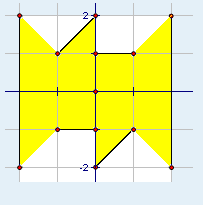

第一行一个整数n表示线段条数。
接下来n行，每行四个整数x1,y1,x2,y2表示一条线段两个端点的坐标。
接下来n行，每行四个整数x1,y1,x2,y2表示一条线段两个端点的坐标。
在平面直角坐标系中有n条互不相交(没有公共点)且所在直线不会经过(0,0)的线段。有一个人站在(0,0)，他的视野是360度的。但是他在某一个方向上的视野会被该方向上碰到的第一条线段所阻挡，问他能看到的区域面积有多大（数据保证是有限面积）。如下图（样例），可以看到的面积就是11。

为了加大难度，他想知道，在删除一条线段的情况下能看到最大多大的面积（不保证是有限面积）。
进一步，他还想知道，在删除两条线段的情况下能看到最大多大的面积（不保证是有限面积）。
6
-1 -1 0 -1
0 -2 1 -1
-1 1 0 2
0 1 1 1
2 -2 2 2
-2 -2 -2 2
11.00
infinite
infinite
数据规模和约定
对于所有数据
1<=n<=50000
坐标的绝对值<=10^3